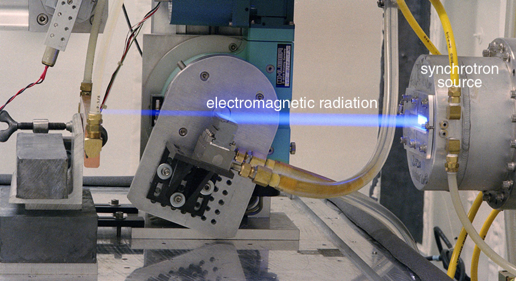
- Explain nuclear radiation.
- Explain the types of radiation—alpha emission, beta emission, and gamma emission.
- Explain the ionization of radiation in an atom.
- Define the range of radiation.
The discovery and study of nuclear radioactivity quickly revealed evidence of revolutionary new physics. In addition, uses for nuclear radiation also emerged quickly—for example, people such as Ernest Rutherford used it to determine the size of the nucleus and devices were painted with radon-doped paint to make them glow in the dark (Figure . We therefore begin our study of nuclear physics with the discovery and basic features of nuclear radioactivity.
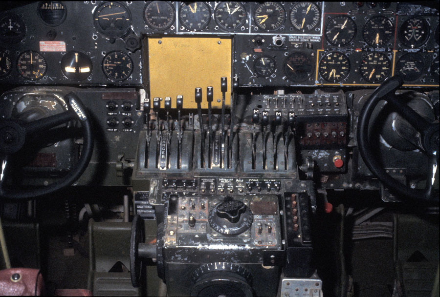
In 1896, the French physicist Antoine Henri Becquerel (1852–1908) accidentally found that a uranium-rich mineral called pitchblende emits invisible, penetrating rays that can darken a photographic plate enclosed in an opaque envelope. The rays therefore carry energy; but amazingly, the pitchblende emits them continuously without any energy input. This is an apparent violation of the law of conservation of energy, one that we now understand is due to the conversion of a small amount of mass into energy, as related in Einstein’s famous equation \(E = mc^2\). It was soon evident that Becquerel’s rays originate in the nuclei of the atoms and have other unique characteristics. The emission of these rays is callednuclear radioactivityor simplyradioactivity. The rays themselves are callednuclear radiation. A nucleus that spontaneously destroys part of its mass to emit radiation is said todecay(a term also used to describe the emission of radiation by atoms in excited states). A substance or object that emits nuclear radiation is said to beradioactive.
Two types of experimental evidence imply that Becquerel’s rays originate deep in the heart (or nucleus) of an atom. First, the radiation is found to be associated with certain elements, such as uranium. Radiation does not vary with chemical state—that is, uranium is radioactive whether it is in the form of an element or compound. In addition, radiation does not vary with temperature, pressure, or ionization state of the uranium atom. Since all of these factors affect electrons in an atom, the radiation cannot come from electron transitions, as atomic spectra do. The huge energy emitted during each event is the second piece of evidence that the radiation cannot be atomic. Nuclear radiation has energies of the order of \(10^6 \, eV\) per event, which is much greater than the typical atomic energies (a few \(eV\)) such as that observed in spectra and chemical reactions, and more than ten times as high as the most energetic characteristic x rays. Becquerel did not vigorously pursue his discovery for very long. In 1898, Marie Curie (1867–1934), then a graduate student married the already well-known French physicist Pierre Curie (1859–1906), began her doctoral study of Becquerel’s rays. She and her husband soon discovered two new radioactive elements, which she namedpolonium(after her native land) andradium(because it radiates). These two new elements filled holes in the periodic table and, further, displayed much higher levels of radioactivity per gram of material than uranium. Over a period of four years, working under poor conditions and spending their own funds, the Curies processed more than a ton of uranium ore to isolate a gram of radium salt. Radium became highly sought after, because it was about two million times as radioactive as uranium. Curie’s radium salt glowed visibly from the radiation that took its toll on them and other unaware researchers. Shortly after completing her Ph.D., both Curies and Becquerel shared the 1903 Nobel Prize in physics for their work on radioactivity. Pierre was killed in a horse cart accident in 1906, but Marie continued her study of radioactivity for nearly 30 more years. Awarded the 1911 Nobel Prize in chemistry for her discovery of two new elements, she remains the only person to win Nobel Prizes in physics and chemistry. Marie’s radioactive fingerprints on some pages of her notebooks can still expose film, and she suffered from radiation-induced lesions. She died of leukemia likely caused by radiation, but she was active in research almost until her death in 1934. The following year, her daughter and son-in-law, Irene and Frederic Joliot-Curie, were awarded the Nobel Prize in chemistry for their discovery of artificially induced radiation, adding to a remarkable family legacy.
Research begun by people such as New Zealander Ernest Rutherford soon after the discovery of nuclear radiation indicated that different types of rays are emitted. Eventually, three types were distinguished and namedalpha\(\alpha\),beta\(\beta\) andgamma\(\gamma\) because, like x-rays, their identities were initially unknown. Figure shows what happens if the rays are passed through a magnetic field. The \(\gamma\)s are unaffected, while the \(\alpha\)s and \(\beta\)s are deflected in opposite directions, indicating the \(\alpha\)s are positive, the \(\beta\)s negative, and the \(\gamma\)s uncharged. Rutherford used both magnetic and electric fields to show that \(\alpha\)s have a positive charge twice the magnitude of an electron, or \(+2|q_e|\). In the process, he found the \(\alpha\)s charge to mass ratio to be several thousand times smaller than the electron’s. Later on, Rutherford collected \(\alpha\)s from a radioactive source and passed an electric discharge through them, obtaining the spectrum of recently discovered helium gas. Among many important discoveries made by Rutherford and his collaborators was the proof that \(\alpha\)radiation is the emission of a helium nucleus. Rutherford won the Nobel Prize in chemistry in 1908 for his early work. He continued to make important contributions until his death in 1934.
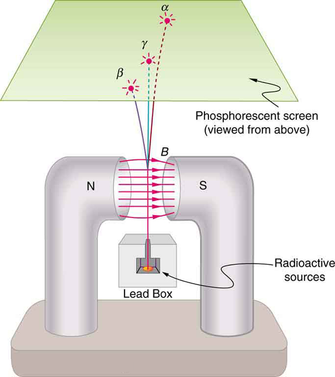
Other researchers had already proved that \(\beta\)s are negative and have the same mass and same charge-to-mass ratio as the recently discovered electron. By 1902, it was recognized that\(\beta\) radiation is the emission of an electron. Although \(\beta\)s are electrons, they do not exist in the nucleus before it decays and are not ejected atomic electrons—the electron is created in the nucleus at the instant of decay.
Since\(\gamma\)sremain unaffected by electric and magnetic fields, it is natural to think they might be photons. Evidence for this grew, but it was not until 1914 that this was proved by Rutherford and collaborators. By scattering\(\gamma\)radiation from a crystal and observing interference, they demonstrated that\(\gamma\)radiation is the emission of a high-energy photon by a nucleus. In fact,\(\gamma\)radiation comes from the de-excitation of a nucleus, just as an x ray comes from the de-excitation of an atom. The names "\(\gamma\)ray" and "x ray" identify the source of the radiation. At the same energy,\(\gamma\)rays and x rays are otherwise identical.
| Type of Radiation | Range |
|---|---|
| \(\alpha\) particles | A sheet of paper, a few cm of air, fractions of a mm of tissue |
| \(\beta\) particles | A thin aluminum plate, or tens of cm of tissue. |
| \(\gamma\) rays | Several cm of lead or meters of concrete. |
Two of the most important characteristics of \(\alpha\), \(\beta\) and \(\gamma\) rays were recognized very early. All three types of nuclear radiation produceionizationin materials, but they penetrate different distances in materials—that is, they have differentranges. Let us examine why they have these characteristics and what are some of the consequences.
Like x rays, nuclear radiation in the form of \(\alpha\)s, \(\beta\)s, and \(\gamma\)s has enough energy per event to ionize atoms and molecules in any material. The energy emitted in various nuclear decays ranges from a few \(keV\) to more than \(10 \, MeV\), while only a few \(eV\)s are needed to produce ionization. The effects of x rays and nuclear radiation on biological tissues and other materials, such as solid state electronics, are directly related to the ionization they produce. All of them, for example, can damage electronics or kill cancer cells. In addition, methods for detecting x rays and nuclear radiation are based on ionization, directly or indirectly. All of them can ionize the air between the plates of a capacitor, for example, causing it to discharge. This is the basis of inexpensive personal radiation monitors, such as pictured in Figure . Apart from \(\alpha\), \(\beta\) and \(\gamma\), there are other forms of nuclear radiation as well, and these also produce ionization with similar effects. We defineionizingradiationas any form of radiation that produces ionization whether nuclear in origin or not, since the effects and detection of the radiation are related to ionization.
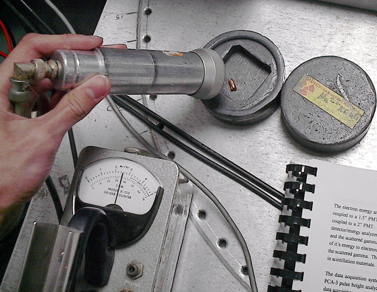
Therange of radiationis defined to be the distance it can travel through a material. Range is related to several factors, including the energy of the radiation, the material encountered, and the type of radiation (Figure . The higher theenergy, the greater the range, all other factors being the same. This makes good sense, since radiation loses its energy in materials primarily by producing ionization in them, and each ionization of an atom or a molecule requires energy that is removed from the radiation. The amount of ionization is, thus, directly proportional to the energy of the particle of radiation, as is its range.
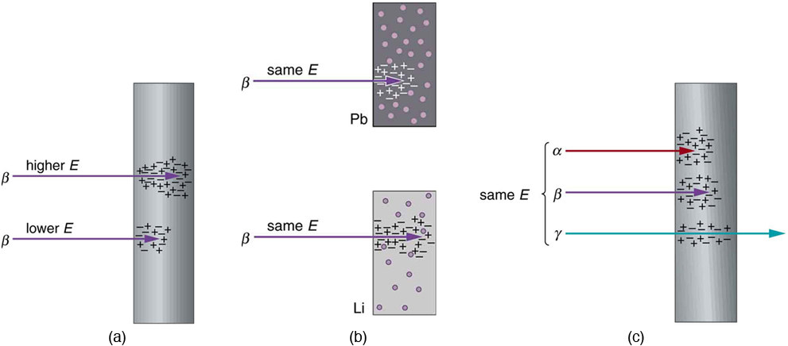
Radiation can be absorbed or shielded by materials, such as the lead aprons dentists drape on us when taking x rays. Lead is a particularly effective shield compared with other materials, such as plastic or air. How does the range of radiation depend onmaterial? Ionizing radiation interacts best with charged particles in a material. Since electrons have small masses, they most readily absorb the energy of the radiation in collisions. The greater the density of a material and, in particular, the greater the density of electrons within a material, the smaller the range of radiation.
Conservation of energy and momentum often results in energy transfer to a less massive object in a collision.
Differenttypesof radiation have different ranges when compared at the same energy and in the same material. Alphas have the shortest range, betas penetrate farther, and gammas have the greatest range. This is directly related to charge and speed of the particle or type of radiation. At a given energy, each \(\alpha\), \(\beta\) or \(\gamma\) will produce the same number of ionizations in a material (each ionization requires a certain amount of energy on average). The more readily the particle produces ionization, the more quickly it will lose its energy. The effect ofchargeis as follows: The \(\alpha\) has a charge of \(+2q_e\), the \(\beta\) has a charge of \(-q_e\), and the \(\gamma\) is uncharged. The electromagnetic force exerted by the \(\alpha\) is thus twice as strong as that exerted by the \(\beta\) and it is more likely to produce ionization. Although chargeless, the \(\gamma\) does interact weakly because it is an electromagnetic wave, but it is less likely to produce ionization in any encounter. More quantitatively, the change in momentum \(\Delta p\) given to a particle in the material is \(\Delta p = F \Delta t\), where \(F\) is the force the \(\alpha\), \(\beta\), or \(\gamma\) exerts over a time \(\Delta t\). The smaller the charge, the smaller is \(F\) and the smaller is the momentum (and energy) lost. Since the speed of alphas is about 5% to 10% of the speed of light, classical (non-relativistic) formulas apply.
Thespeedat which they travel is the other major factor affecting the range of \(\alpha\)s, \(\beta\)s, and \(\gamma\)s. The faster they move, the less time they spend in the vicinity of an atom or a molecule, and the less likely they are to interact. Since \(\alpha\)s and \(\beta\)s are particles with mass (helium nuclei and electrons, respectively), their energy is kinetic, given classically by \(\frac{1}{2}mv^2\). The mass of the \(\beta\) particle is thousands of times less than that of the \(\alpha\)s, so that \(\beta\)s must travel much faster than \(\alpha\)s to have the same energy. Since \(\beta\)s move faster (most at relativistic speeds), they have less time to interact than \(\alpha\)s. Gamma rays are photons, which must travel at the speed of light. They are even less likely to interact than a \(\beta\), since they spend even less time near a given atom (and they have no charge). The range of \(\gamma\)s is thus greater than the range of \(\beta\)s.
Alpha radiation from radioactive sources has a range much less than a millimeter of biological tissues, usually not enough to even penetrate the dead layers of our skin. On the other hand, the same \(\alpha\) radiation can penetrate a few centimeters of air, so mere distance from a source prevents \(\alpha\) radiation from reaching us. This makes \(\alpha\) radiation relatively safe for our body compared to \(\beta\) and \(\gamma\) radiation. Typical \(\beta\) radiation can penetrate a few millimeters of tissue or about a meter of air. Beta radiation is thus hazardous even when not ingested. The range of \(\beta\)s in lead is about a millimeter, and so it is easy to store \(beta\) sources in lead radiation-proof containers. Gamma rays have a much greater range than either \(\alpha\)s, or \(\beta\)s. In fact, if a given thickness of material, like a lead brick, absorbs 90% of the \(\gamma\)s, then a second lead brick will only absorb 90% of what got through the first. Thus, \(\gamma\)s do not have a well-defined range; we can only cut down the amount that gets through. Typically, \(\gamma\)s can penetrate many meters of air, go right through our bodies, and are effectively shielded (that is, reduced in intensity to acceptable levels) by many centimeters of lead. One benefit of \(\gamma\)s is that they can be used as radioactive tracers (Figure .
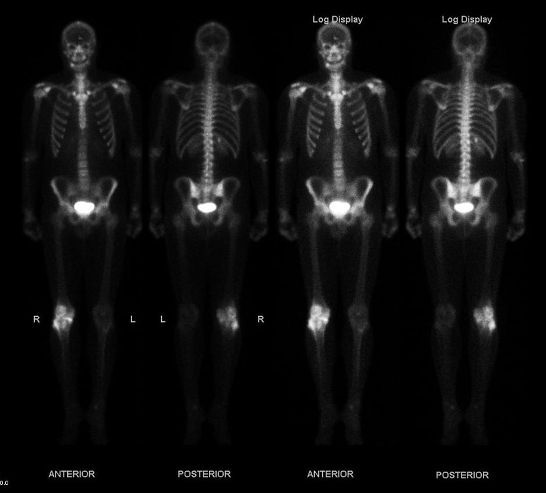
PHET EXPLORATIONS: BETA DECAY
Watchbeta decayoccur for a collection of nuclei or for an individual nucleus.
Paul Peter Urone (Professor Emeritus at California State University, Sacramento) and Roger Hinrichs (State University of New York, College at Oswego) with Contributing Authors: Kim Dirks (University of Auckland) and Manjula Sharma (University of Sydney). This work is licensed by OpenStax University Physics under aCreative Commons Attribution License (by 4.0).
📖 OpenStax College Physics, Section 31.1. openstax.org · CC BY 4.0
- Explain the working principle of a Geiger tube.
- Define and discuss radiation detectors.
It is well known that ionizing radiation affects us but does not trigger nerve impulses. Newspapers carry stories about unsuspecting victims of radiation poisoning who fall ill with radiation sickness, such as burns and blood count changes, but who never felt the radiation directly. This makes the detection of radiation by instruments more than an important research tool. This section is a brief overview of radiation detection and some of its applications.
The first direct detection of radiation was Becquerel’s fogged photographic plate. Photographic film is still the most common detector of ionizing radiation, being used routinely in medical and dental x rays. Nuclear radiation is also captured on film, such as seen in Figure . The mechanism for film exposure by ionizing radiation is similar to that by photons. A quantum of energy interacts with the emulsion and alters it chemically, thus exposing the film. The quantum come from an \(\alpha\)-particle, \(\beta\)-particle, or photon, provided it has more than the few eV of energy needed to induce the chemical change (as does all ionizing radiation). The process is not 100% efficient, since not all incident radiation interacts and not all interactions produce the chemical change. The amount of film darkening is related to exposure, but the darkening also depends on the type of radiation, so that absorbers and other devices must be used to obtain energy, charge, and particle-identification information.
Another very commonradiation detectoris theGeiger tube. The clicking and buzzing sound we hear in dramatizations and documentaries, as well as in our own physics labs, is usually an audio output of events detected by a Geiger counter. These relatively inexpensive radiation detectors are based on the simple and sturdy Geiger tube, shown schematically in Figure \(\PageIndex{1b}\). A conducting cylinder with a wire along its axis is filled with an insulating gas so that a voltage applied between the cylinder and wire produces almost no current. Ionizing radiation passing through the tube produces free ion pairs that are attracted to the wire and cylinder, forming a current that is detected as a count. The word count implies that there is no information on energy, charge, or type of radiation with a simple Geiger counter. They do not detect every particle, since some radiation can pass through without producing enough ionization to be detected. However, Geiger counters are very useful in producing a prompt output that reveals the existence and relative intensity of ionizing radiation.
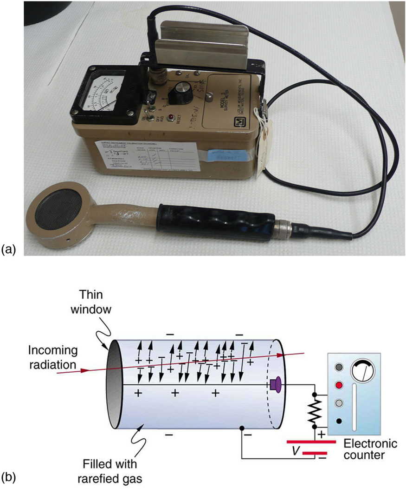
Another radiation detection method records light produced when radiation interacts with materials. The energy of the radiation is sufficient to excite atoms in a material that may fluoresce, such as the phosphor used by Rutherford’s group. Materials calledscintillatorsuse a more complex collaborative process to convert radiation energy into light. Scintillators may be liquid or solid, and they can be very efficient. Their light output can provide information about the energy, charge, and type of radiation. Scintillator light flashes are very brief in duration, enabling the detection of a huge number of particles in short periods of time. Scintillator detectors are used in a variety of research and diagnostic applications. Among these are the detection by satellite-mounted equipment of the radiation from distant galaxies, the analysis of radiation from a person indicating body burdens, and the detection of exotic particles in accelerator laboratories.
Light from a scintillator is converted into electrical signals by devices such as thephotomultipliertube shown schematically in Figure . These tubes are based on the photoelectric effect, which is multiplied in stages into a cascade of electrons, hence the name photomultiplier. Light entering the photomultiplier strikes a metal plate, ejecting an electron that is attracted by a positive potential difference to the next plate, giving it enough energy to eject two or more electrons, and so on. The final output current can be made proportional to the energy of the light entering the tube, which is in turn proportional to the energy deposited in the scintillator. Very sophisticated information can be obtained with scintillators, including energy, charge, particle identification, direction of motion, and so on.
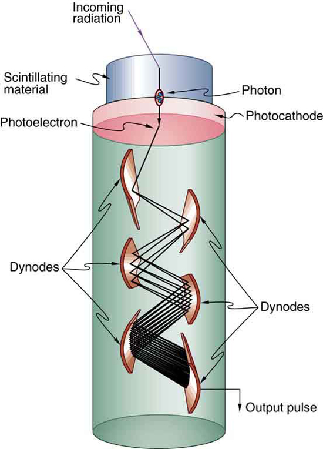
Solid-state radiation detectorsconvert ionization produced in a semiconductor (like those found in computer chips) directly into an electrical signal. Semiconductors can be constructed that do not conduct current in one particular direction. When a voltage is applied in that direction, current flows only when ionization is produced by radiation, similar to what happens in a Geiger tube. Further, the amount of current in a solid-state detector is closely related to the energy deposited and, since the detector is solid, it can have a high efficiency (since ionizing radiation is stopped in a shorter distance in solids fewer particles escape detection). As with scintillators, very sophisticated information can be obtained from solid-state detectors.
PHET EXPLORATIONS: RADIOACTIVE DATING GAME
Learn about different types of radiometric dating, such as carbon dating with thePhET Radioactive Dating Game. Understand how decay and half life work to enable radiometric dating to work. Play a game that tests your ability to match the percentage of the dating element that remains to the age of the object.
📖 OpenStax College Physics, Section 31.2. openstax.org · CC BY 4.0
- Define and discuss the nucleus in an atom.
- Define atomic number.
- Define and discuss isotopes.
- Calculate the density of the nucleus.
- Explain nuclear force.
What is inside the nucleus? Why are some nuclei stable while others decay? (Figure Why are there different types of decay (\(\alpha\), \(\beta\) and \(\gamma\))? Why are nuclear decay energies so large? Pursuing natural questions like these has led to far more fundamental discoveries than you might imagine.
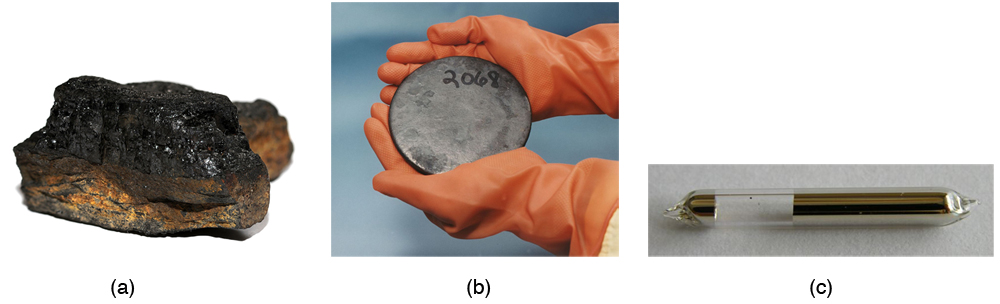
We have already identifiedprotonsas the particles that carry positive charge in the nuclei. However, there are actuallytwotypes of particles in the nuclei—theprotonand theneutron, referred to collectively asnucleons, the constituents of nuclei. As its name implies, theneutronis a neutral particle (\(q = 0\)) that has nearly the same mass and intrinsic spin as the proton. Table compares the masses of protons, neutrons, and electrons. Note how close the proton and neutron masses are, but the neutron is slightly more massive once you look past the third digit. Both nucleons are much more massive than an electron. In fact, \(m_p = 1836 \, m_e\) (as noted inMedical Applications of Nuclear Physicsand \(m_n = 1839 \, m_e\).
| Particle | Symbol | kg | u | \(MeVc^2\) |
|---|---|---|---|---|
| Proton | p | \(1.67262 \times 10^{-27}\) | 1.007276 | 938.27 |
| Neutron | n | \(1.67493 \times 10^{-27}\) | 1.008665 | 939.57 |
| Electron | e | \(9.1094 \times 10^{-31}\) | 0.00054858 | 0.511 |
Table also gives masses in terms of mass units that are more convenient than kilograms on the atomic and nuclear scale. The first of these is theunifiedatomic massunit(u), defined as
This unit is defined so that a neutral carbon \(^{12}C\) atom has a mass of exactly 12 u. Masses are also expressed in units of \(MeV/c^2\). These units are very convenient when considering the conversion of mass into energy (and vice versa), as is so prominent in nuclear processes. Using \(E = mc^3\) and units of \(m\) in \(MeV/c^2\) we find that \(c^2\) cancels and \(E\) comes out conveniently in MeV. For example, if the rest mass of a proton is converted entirely into energy, then
It is useful to note that 1 u of mass converted to energy produces 931.5 MeV, or
All properties of a nucleus are determined by the number of protons and neutrons it has. A specific combination of protons and neutrons is called anuclideand is a unique nucleus. The following notation is used to represent a particular nuclide:
where the symbols \(A, \, X, \, Z\) and \(N\) are defined as follows: Thenumber of protons in a nucleusis theatomic number\(Z\), as defined inMedical Applications of Nuclear Physics. X is thesymbol for the element, such as Ca for calcium. However, once \(Z\) is known, the element is known; hence, \(Z\) and \(X\) are redundant. For example, \(Z = 20\) is always calcium, and calcium always has \(Z = 20\). \(N\) is thenumber of neutronsin a nucleus. In the notation for a nuclide, the subscript \(N\) is usually omitted. The symbol \(A\) is defined as the number of nucleons or thetotal number of protons and neutrons,
where \(A\) is also called themass number. This name for \(A\) is logical; the mass of an atom is nearly equal to the mass of its nucleus, since electrons have so little mass. The mass of the nucleus turns out to be nearly equal to the sum of the masses of the protons and neutrons in it, which is proportional to \(A\). In this context, it is particularly convenient to express masses in units of u. Both protons and neutrons have masses close to 1 u, and so the mass of an atom is close to \(A\) u. For example, in an oxygen nucleus with eight protons and eight neutrons, \(A = 16\), and its mass is 16 u. As noticed, the unified atomic mass unit is defined so that a neutral carbon atom (actually a \(^{12}C\) atom) has a mass ofexactly12 u. Carbon was chosen as the standard, partly because of its importance in organic chemistry (seeAppendix A).
Let us look at a few examples of nuclides expressed in the \(_A^ZX_N\) notation. The nucleus of the simplest atom, hydrogen, is a single proton, or \(_1^1H_2\) (the zero for no neutrons is often omitted). To check this symbol, refer to the periodic table—you see that the atomic number \(Z\) of hydrogen is 1. Since you are given that there are no neutrons, the mass number \(A\) is also 1. Suppose you are told that the helium nucleus or \(\alpha\) particle has two protons and two neutrons. You can then see that it is written \(_2^4He_2\). There is a scarce form of hydrogen found in nature called deuterium; its nucleus has one proton and one neutron and, hence, twice the mass of common hydrogen. The symbol for deuterium is, thus, \(_1^2H_1\) (sometimes \(D\) is used, as for deuterated water \(D_2O\)). An even rarer—and radioactive—form of hydrogen is called tritium, since it has a single proton and two neutrons, and it is written \(_1^3H_2\). These three varieties of hydrogen have nearly identical chemistries, but the nuclei differ greatly in mass, stability, and other characteristics. Nuclei (such as those of hydrogen) having the same \(Z\) and different \(N\)s are defined to beisotopesof the same element.
There is some redundancy in the symbols \(A, \, X, \, Z,\) and \(N\). If the element \(X\) is known, then \(Z\) can be found in a periodic table and is always the same for a given element. If both \(A\) and \(X\) are known, then \(N\) can also be determined (first find \(Z\); then, \(N = A - Z\)). Thus the simpler notation for nuclides is
which is sufficient and is most commonly used. For example, in this simpler notation, the three isotopes of hydrogen are \(^1H, \, ^2H\) and \(^3H\) while the \(\alpha\)-particle is \(^4He\). We read this backward, saying helium-4 for \(^4He\), or uranium-238 for \(^{238}U\). So for \(^{238}U\) should we need to know, we can determine that \(Z = 92\) for uranium from the periodic table, and, thus, \(N = 238 - 92 = 146\).
A variety of experiments indicate that a nucleus behaves something like a tightly packed ball of nucleons, as illustrated inFigure. These nucleons have large kinetic energies and, thus, move rapidly in very close contact. Nucleons can be separated by a large force, such as in a collision with another nucleus, but resist strongly being pushed closer together. The most compelling evidence that nucleons are closely packed in a nucleus is that theradius of a nucleus,\(r\) is found to be given approximately by
\[r = r_0A^{1/3},\] where \(r_0 = 1.2 \, fm\) and \(A\) is the mass number of the nucleus. Note that \(r^3 \propto A\). Since many nuclei are spherical, and the volume of a sphere is \(V = (4/3)\pi r^3\), we see that \(V \propto A\) —that is, the volume of a nucleus is proportional to the number of nucleons in it. This is what would happen if you pack nucleons so closely that there is no empty space between them.
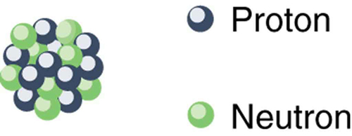
Nucleons are held together by nuclear forces and resist both being pulled apart and pushed inside one another. The volume of the nucleus is the sum of the volumes of the nucleons in it, here shown in different colors to represent protons and neutrons.
(a) The radius of a nucleus is given by \[r = r_0A^{1/3}.\nonumber\]
Substituting the values for \(r_0\) and \(A\) yields
(b) Density is defined to be \(\rho = m/V\), which for a sphere of radius \(r\) is
Converting to units of \(kg/m^3\), we find
What forces hold a nucleus together? The nucleus is very small and its protons, being positive, exert tremendous repulsive forces on one another. (The Coulomb force increases as charges get closer, since it is proportional to \(1/r^2\), even at the tiny distances found in nuclei.) The answer is that two previously unknown forces hold the nucleus together and make it into a tightly packed ball of nucleons. These forces are called theweak and strong nuclear forces. Nuclear forces are so short ranged that they fall to zero strength when nucleons are separated by only a few fm. However, like glue, they are strongly attracted when the nucleons get close to one another. The strong nuclear force is about 100 times more attractive than the repulsive EM force, easily holding the nucleons together. Nuclear forces become extremely repulsive if the nucleons get too close, making nucleons strongly resist being pushed inside one another, something like ball bearings.
The fact that nuclear forces are very strong is responsible for the very large energies emitted in nuclear decay. During decay, the forces do work, and since work is force times the distance (\(W = Fd \, cos \, \theta\)), a large force can result in a large emitted energy. In fact, we know that there aretwodistinct nuclear forces because of the different types of nuclear decay—the strong nuclear force is responsible for decay, while the weak nuclear force is responsible for \(\beta\) decay.
The many stable and unstable nuclei we have explored, and the hundreds we have not discussed, can be arranged in a table called thechart of the nuclides, a simplified version of which is shown in Figure . Nuclides are located on a plot of \(N\) versus \(Z\). Examination of a detailed chart of the nuclides reveals patterns in the characteristics of nuclei, such as stability, abundance, and types of decay, analogous to but more complex than the systematics in the periodic table of the elements.
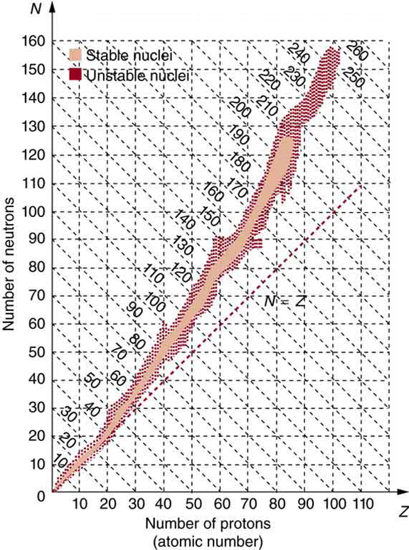
In principle, a nucleus can have any combination of protons and neutrons, but Figure shows a definite pattern for those that are stable. For low-mass nuclei, there is a strong tendency for \(N\) and \(Z\) to be nearly equal. This means that the nuclear force is more attractive when \(N = Z\). More detailed examination reveals greater stability when \(N\) and \(Z\) are even numbers—nuclear forces are more attractive when neutrons and protons are in pairs. For increasingly higher masses, there are progressively more neutrons than protons in stable nuclei. This is due to the ever-growing repulsion between protons. Since nuclear forces are short ranged, and the Coulomb force is long ranged, an excess of neutrons keeps the protons a little farther apart, reducing Coulomb repulsion. Decay modes of nuclides out of the region of stability consistently produce nuclides closer to the region of stability. There are more stable nuclei having certain numbers of protons and neutrons, calledmagic numbers. Magic numbers indicate a shell structure for the nucleus in which closed shells are more stable. Nuclear shell theory has been very successful in explaining nuclear energy levels, nuclear decay, and the greater stability of nuclei with closed shells. We have been producing ever-heavier transuranic elements since the early 1940s, and we have now produced the element with \(Z = 118\). There are theoretical predictions of an island of relative stability for nuclei with such high \(Z\)s.
📖 OpenStax College Physics, Section 31.3. openstax.org · CC BY 4.0
- Define and discuss nuclear decay.
- State the conservation laws.
- Explain parent and daughter nucleus.
- Calculate the energy emitted during nuclear decay.
Nucleardecayhas provided an amazing window into the realm of the very small. Nuclear decay gave the first indication of the connection between mass and energy, and it revealed the existence of two of the four basic forces in nature. In this section, we explore the major modes of nuclear decay; and, like those who first explored them, we will discover evidence of previously unknown particles and conservation laws.
Some nuclides are stable, apparently living forever. Unstable nuclides decay (that is, they are radioactive), eventually producing a stable nuclide after many decays. We call the original nuclide theparentand its decay products thedaughters. Some radioactive nuclides decay in a single step to a stable nucleus. For example, \(\ce{^{60}Co}\) is unstable and decays directly to \(\ce{^{60}Ni}\), which is stable. Others, such as \(\ce{^{238}U}\), decay to another unstable nuclide, resulting in adecay seriesin which each subsequent nuclide decays until a stable nuclide is finally produced. The decay series that starts from \(\ce{^{238}U}\) is of particular interest, since it produces the radioactive isotopes \(\ce{^{226}Ra}\) and \(\ce{^{210}Po}\), which the Curies first discovered (Figure . Radon gas is also produced (\(\ce{^{222}Rn}\) in the series), an increasingly recognized naturally occurring hazard. Since radon is a noble gas, it emanates from materials, such as soil, containing even trace amounts of \(\ce{^{238}U}\) and can be inhaled. The decay of radon and its daughters produces internal damage. The \(\ce{^{238}U}\) decay series ends with \(\ce{^{206}Pb}\), a stable isotope of lead.
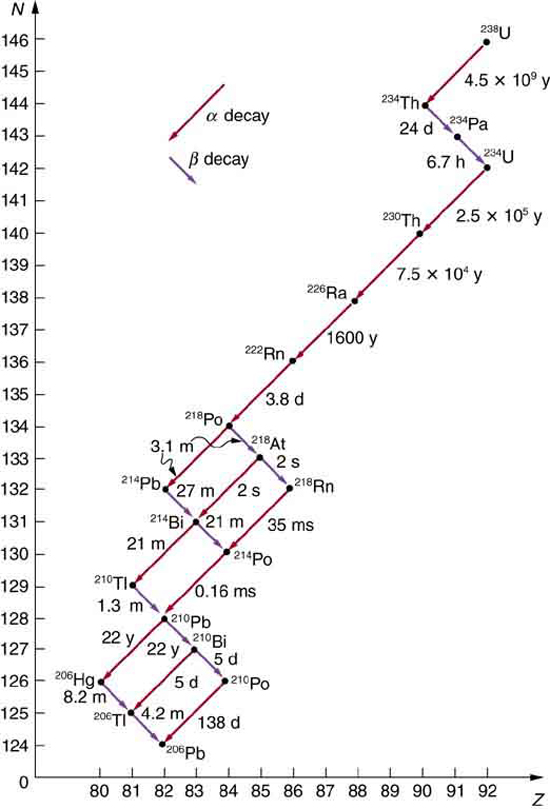
Note that the daughters of \(\alpha\) decay shown in Figure always have two fewer protons and two fewer neutrons than the parent. This seems reasonable, since we know that \(\alpha\) decay is the emission of a \(\ce{^4He}\) nucleus, which has two protons and two neutrons. The daughters of \(\beta\) decay have one less neutron and one more proton than their parent. Beta decay is a little more subtle, as we shall see. No \(\gamma\) decays are shown in the figure, because they do not produce a daughter that differs from the parent.
Inalpha decay, a \(\ce{^4He}\) nucleus simply breaks away from the parent nucleus, leaving a daughter with two fewer protons and two fewer neutrons than the parent (Figure . One example of \(\alpha\) decay is shown in Figure for \(\ce{^{238}U}\). Another nuclide that undergoes \(\alpha\) decay is \(^{239}Pu\). The decay equations for these two nuclides are
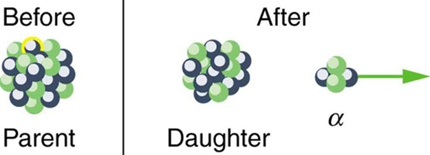
If you examine the periodic table of the elements, you will find that Th has \(Z = 90\), two fewer than U, which has \(Z = 92\). Similarly, in the seconddecay equation, we see that U has two fewer protons than Pu, which has \(Z = 94\). The general rule for \(\alpha\) decay is best written in the format \(_Z^AX_N\). If a certain nuclide is known to \(\alpha\) decay (generally this information must be looked up in a table of isotopes, such as inAppendix B), its\(\alpha\)decay equationis
where \(\ce{Y}\) is the nuclide that has two fewer protons than \(\ce{X}\), such as \(\ce{Th}\) having two fewer than \(\ce{U}\). So if you were told that \(^{239}Pu \, \alpha\) decays and were asked to write the complete decay equation, you would first look up which element has two fewer protons (an atomic number two lower) and find that this is uranium. Then since four nucleons have broken away from the original 239, its atomic mass would be 235.
It is instructive to examine conservation laws related to \(\alpha\) decay. You can see from the equation
that total charge is conserved. Linear and angular momentum are conserved, too. Although conserved angular momentum is not of great consequence in this type of decay, conservation of linear momentum has interesting consequences. If the nucleus is at rest when it decays, its momentum is zero. In that case, the fragments must fly in opposite directions with equal-magnitude momenta so that total momentum remains zero. This results in the \(\alpha\) particle carrying away most of the energy, as a bullet from a heavy rifle carries away most of the energy of the powder burned to shoot it. Total mass–energy is also conserved: the energy produced in the decay comes from conversion of a fraction of the original mass. As discussed in the modele onAtomic Physics, the general relationship is
Here, \(E\) is thenuclear reaction energy(the reaction can be nuclear decay or any other reaction), and \(\Delta m\) is the difference in mass between initial and final products. When the final products have less total mass, \(\Delta m\) is positive, and the reaction releases energy (is exothermic). When the products have greater total mass, the reaction is endothermic (\(\Delta m\) is negative) and must be induced with an energy input. For \(\alpha\) decay to be spontaneous, the decay products must have smaller mass than the parent.
Find the energy emitted in the \(\alpha\) decay of \(\ce{^{239}Pu}\).
Nuclear reaction energy, such as released inαdecay, can be found using the equation \(E = (\Delta m)c^2\). We must first find \(\Delta m\), the difference in mass between the parent nucleus and the products of the decay. This is easily done using masses given inAppendix A.
The decay equation was given earlier for \(^{239}Pu\); it is
Thus the pertinent masses are those of \(^{239}Pu\), \(^{235}U\), and the \(\alpha\) particle or \(^4He\), all of which are listed inAppendix A. The initial mass was \(m(^{239}Pu) = 239.052157 \, u\). The final mass is the sum:
Now we can find \(E\) by entering \(\Delta m\) into Equation \ref{einstein1}:
We know \(1 \, u = 931.5 \, MeV/c^2\), and so
The energy released in this \(\alpha\) decay is in the \(MeV\) range, about \(10^6\) times as great as typical chemical reaction energies, consistent with many previous discussions. Most of this energy becomes kinetic energy of the \(\alpha\) particle (or \(^4He\) nucleus), which moves away at high speed. The energy carried away by the recoil of the \(^{235}U\) nucleus is much smaller in order to conserve momentum. The \(^{235}U\) nucleus can be left in an excited state to later emit photons (\(\gamma\) rays). This decay is spontaneous and releases energy, because the products have less mass than the parent nucleus. The question of why the products have less mass will be discussed inBinding Energy. Note that the masses given inAppendix Aare atomic masses of neutral atoms, including their electrons. The mass of the electrons is the same before and after \(α\) decay, and so their masses subtract out when finding \(\Delta m\). In this case, there are 94 electrons before and after the decay.
There are actuallythreetypes ofbeta decay. The first discovered was “ordinary” beta decay and is called \(\beta^-\) decay or electron emission. The symbol \(\beta^-\) representsan electron emitted in nuclear beta decay. Cobalt-60 is a nuclide that \(\beta^-\) decays in the following manner:
Theneutrinois a particle emitted in beta decay that was unanticipated and is of fundamental importance. The neutrino was not even proposed in theory until more than 20 years after beta decay was known to involve electron emissions. Neutrinos are so difficult to detect that the first direct evidence of them was not obtained until 1953. Neutrinos are nearly massless, have no charge, and do not interact with nucleons via the strong nuclear force. Traveling approximately at the speed of light, they have little time to affect any nucleus they encounter. This is, owing to the fact that they have no charge (and they are not EM waves), they do not interact through the EM force. They do interact via the relatively weak and very short range weak nuclear force. Consequently, neutrinos escape almost any detector and penetrate almost any shielding. However, neutrinos do carry energy, angular momentum (they are fermions with half-integral spin), and linear momentum away from a beta decay. When accurate measurements of beta decay were made, it became apparent that energy, angular momentum, and linear momentum were not accounted for by the daughter nucleus and electron alone. Either a previously unsuspected particle was carrying them away, or three conservation laws were being violated. Wolfgang Pauli made a formal proposal for the existence of neutrinos in 1930. The Italian-born American physicist Enrico Fermi (1901–1954) gave neutrinos their name, meaning little neutral ones, when he developed a sophisticated theory of beta decay (Figure . Part of Fermi’s theory was the identification of the weak nuclear force as being distinct from the strong nuclear force and in fact responsible for beta decay.
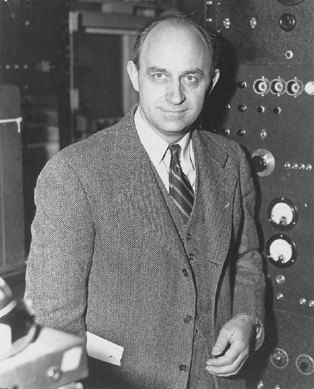
The neutrino also reveals a new conservation law. There are various families of particles, one of which is the electron family. We propose that the number of members of the electron family is constant in any process or any closed system. In our example of beta decay, there are no members of the electron family present before the decay, but after, there is an electron and a neutrino. So electrons are given an electron family number of \(+1\). The neutrino in \(\beta^-\) decay is anelectron’s antineutrino, given the symbol \(\overline{\nu}_e\), where \(\nu\) is the Greek letter nu, and the subscriptemeans this neutrino is related to the electron. The bar indicates this is a particle ofantimatter.(All particles have antimatter counterparts that are nearly identical except that they have the opposite charge. Antimatter is almost entirely absent on Earth, but it is found in nuclear decay and other nuclear and particle reactions as well as in outer space.) The electron’s antineutrino \(\overline{\nu}_e\), being antimatter, has an electron family number of \(-1\). The total is zero, before and after the decay. The new conservation law, obeyed in all circumstances, states that thetotal electron family number is constant. An electron cannot be created without also creating an antimatter family member. This law is analogous to the conservation of charge in a situation where total charge is originally zero, and equal amounts of positive and negative charge must be created in a reaction to keep the total zero.
If a nuclide \(_Z^AX_N\) is known to \(\beta^-\) decay, then its \(\beta^-\) decay equation is
where Y is the nuclide having one more proton than X (Figure . So if you know that a certain nuclide \(\beta^-\) decays, you can find the daughter nucleus by first looking up \(Z\) for the parent and then determining which element has atomic number \(Z + 1\). In the example of the \(\beta^-\) decay of \(^{60}Co\) given earlier, we see that \(Z = 27\) for Co and \(Z = 28\) is Ni. It is as if one of the neutrons in the parent nucleus decays into a proton, electron, and neutrino. In fact, neutrons outside of nuclei do just that—they live only an average of a few minutes and \(\beta^-\) decay in the following manner:
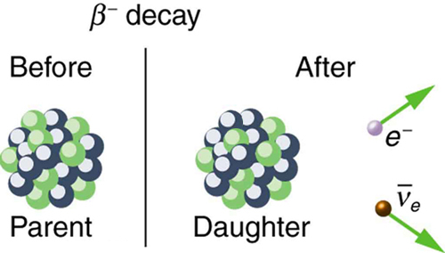
We see that charge is conserved in \(\beta^-\) decay, since the total charge is \(Z\) before and after the decay. For example, in \(^{60}Co\) decay, total charge is 27 before decay, since cobalt has \(Z = 27\). After decay, the daughter nucleus is Ni, which has \(Z = 28\), and there is an electron, so that the total charge is also \(28 + (-1)\) or 27. Angular momentum is conserved, but not obviously (you have to examine the spins and angular momenta of the final products in detail to verify this). Linear momentum is also conserved, again imparting most of the decay energy to the electron and the antineutrino, since they are of low and zero mass, respectively. Another new conservation law is obeyed here and elsewhere in nature. The total number of nucleons \(A\) is conserved. In \(^{60}Co\) decay, for example, there are 60 nucleons before and after the decay. Note that total \(A\) is also conserved in \(\alpha\) decay. Also note that the total number of protons changes, as does the total number of neutrons, so that total \(Z\) and total \(N\) are not conserved in \(\beta^-\) decay, as they are in \(\alpha\) decay. Energy released in \(\beta^-\) decay can be calculated given the masses of the parent and products.
Find the energy emitted in the \(\beta^-\) decay of \(^{60}Co\).
As in the preceding example, we must first find \(\Delta m\), the difference in mass between the parent nucleus and the products of the decay, using masses given inAppendix A. Then the emitted energy is calculated as before, using \(E = (\Delta m)c^2\). The initial mass is just that of the parent nucleus, and the final mass is that of the daughter nucleus and the electron created in the decay. The neutrino is massless, or nearly so. However, since the masses given inAppendix Aare for neutral atoms, the daughter nucleus has one more electron than the parent, and so the extra electron mass that corresponds to the \(\beta^-\) is included in the atomic mass of Ni. Thus, \[ \Delta m = m(^{60}Co) - m(^{60}Ni ).\]
The \(\beta^-\) decay equation for \(^{60}Co\) is
Entering the masses found inAppendix Agives
\[ E = (\Delta m)c^2 = (0.003031 \, u)c^2.\] Using \(1 \, u = 031.5 \, MeV/c^2\)
Discussion and Implications
Perhaps the most difficult thing about this example is convincing yourself that the \(\beta^-\) mass is included in the atomic mass of \(^{60}Ni\). Beyond that are other implications. Again the decay energy is in the MeV range. This energy is shared by all of the products of the decay. In many \(^{60}Co\) decays, the daughter nucleus \(^{60}Ni\) is left in an excited state and emits photons ( \gamma\) rays). Most of the remaining energy goes to the electron and neutrino, since the recoil kinetic energy of the daughter nucleus is small. One final note: the electron emitted in \(\beta^-\) decay is created in the nucleus at the time of decay.
The second type of beta decay is less common than the first. It is \(\beta^+\) decay. Certain nuclides decay by the emission of apositiveelectron. This isantielectronorpositron decay(Figure .
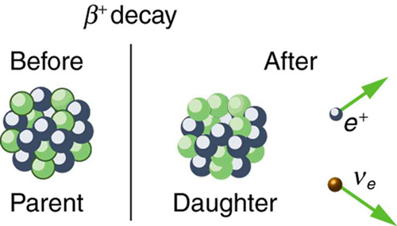
The antielectron is often represented by the symbol \(e^+\), but in beta decay it is written as \(\beta^+\) to indicate the antielectron was emitted in a nuclear decay. Antielectrons are the antimatter counterpart to electrons, being nearly identical, having the same mass, spin, and so on, but having a positive charge and an electron family number of \(-1\). When a positron encounters an electron, there is a mutual annihilation in which all the mass of the antielectron-electron pair is converted into pure photon energy. (The reaction, \(e^+ + e^- \rightarrow \gamma + \gamma\), conserves electron family number as well as all other conserved quantities.) If a nuclide \(_Z^AX_N\) is known to \(\beta^+\) decay, then its \(\beta^+\) decay equation is
where Y is the nuclide having one less proton than X (to conserve charge) and \(\nu_e\) is the symbol for the electron’s neutrino, which has an electron family number of \(+1\). Since an antimatter member of the electron family (the \(\beta^+\)) is created in the decay, a matter member of the family (here the \(\nu_e\) must also be created. Given, for example, that \(^{22}Na \, \beta^+\) decays, you can write its full decay equation by first finding that \(Z = 11\) for \(^{22}Na\), so that the daughter nuclide will have \(Z = 10\), the atomic number for neon. Thus the \(\beta^+\) decay equation for \(^{22}Na\) is
In \(\beta^+\) decay, it is as if one of the protons in the parent nucleus decays into a neutron, a positron, and a neutrino. Protons do not do this outside of the nucleus, and so the decay is due to the complexities of the nuclear force. Note again that the total number of nucleons is constant in this and any other reaction. To find the energy emitted in \(\beta^+\) decay, you must again count the number of electrons in the neutral atoms, since atomic masses are used. The daughter has one less electron than the parent, and one electron mass is created in the decay. Thus, in \(\beta^+\) decay,
since we use the masses of neutral atoms.
Electron captureis the third type of beta decay. Here, a nucleus captures an inner-shell electron and undergoes a nuclear reaction that has the same effect as \(\beta^+\) decay. Electron capture is sometimes denoted by the letters EC. We know that electrons cannot reside in the nucleus, but this is a nuclear reaction that consumes the electron and occurs spontaneously only when the products have less mass than the parent plus the electron. If a nuclide \(_Z^AX_N\) is known to undergo electron capture, then itselectron capture equationis
Any nuclide that can \(\beta^+\) decay can also undergo electron capture (and often does both). The same conservation laws are obeyed for EC as for \(\beta^+\) decay. It is good practice to confirm these for yourself.
All forms of beta decay occur because the parent nuclide is unstable and lies outside the region of stability in the chart of nuclides. Those nuclides that have relatively more neutrons than those in the region of stability will \(\beta^-\) decay to produce a daughter with fewer neutrons, producing a daughter nearer the region of stability. Similarly, those nuclides having relatively more protons than those in the region of stability will \(\beta^-\) decay or undergo electron capture to produce a daughter with fewer protons, nearer the region of stability.
Gamma decayis the simplest form of nuclear decay - it is the emission of energetic photons by nuclei left in an excited state by some earlier process. Protons and neutrons in an excited nucleus are in higher orbitals, and they fall to lower levels by photon emission (analogous to electrons in excited atoms). Nuclear excited states have lifetimes typically of only about \(10^{-14}\) s, an indication of the great strength of the forces pulling the nucleons to lower states. The \(\gamma\) decay equation is simply
where the asterisk indicates the nucleus is in an excited state. There may be one or more \(\gamma\)s emitted, depending on how the nuclide de-excites. In radioactive decay, \(\gamma\) emission is common and is preceded by \(\gamma\) or \(\beta\) decay. For example, when \(^{60}Co \, \beta^-\) decays, it most often leaves the daughter nucleus in an excited state, written \(\ce{^{60}Ni*}\). Then the nickel nucleus quickly \(\gamma\) decays by the emission of two penetrating \(\gamma\)s.
These are called cobalt \(\gamma\) rays, although they come from nickel—they are used for cancer therapy, for example. It is again constructive to verify the conservation laws for gamma decay. Finally, since \(\gamma\) decay does not change the nuclide to another species, it is not prominently featured in charts of decay series, such as that inFigure.
There are other types of nuclear decay, but they occur less commonly than \(\alpha\), \(\beta\), and \(\gamma\) decay. Spontaneous fission is the most important of the other forms of nuclear decay because of its applications in nuclear power and weapons. It is covered in the next chapter.
📖 OpenStax College Physics, Section 31.4. openstax.org · CC BY 4.0
- Define half-life.
- Define dating.
- Calculate age of old objects by radioactive dating.
Unstable nuclei decay. However, some nuclides decay faster than others. For example, radium and polonium, discovered by the Curies, decay faster than uranium. This means they have shorter lifetimes, producing a greater rate of decay. In this section we explore half-life and activity, the quantitative terms for lifetime and rate of decay.
Why use a term like half-life rather than lifetime? The answer can be found by examining Figure , which shows how the number of radioactive nuclei in a sample decreases with time. Thetime in which half of the original number of nuclei decayis defined as thehalf-life \(t_{1/2}\).Half of the remaining nuclei decay in the next half-life. Further, half of that amount decays in the following half-life. Therefore, the number of radioactive nuclei decreases from \(N\) to \(N/2\) in one half-life, then to \(N/4\) in the next, and to \(N/8\) in the next, and so on. If \(N\) is a large number, thenmanyhalf-lives (not just two) pass before all of the nuclei decay. Nuclear decay is an example of a purely statistical process. A more precise definition of half-life is thateach nucleus has a 50% chance of living for a time equal to one half-life\(t_{1/2}\). Thus, if \(N\) is reasonably large, half of the original nuclei decay in a time of one half-life. If an individual nucleus makes it through that time, it still has a 50% chance of surviving through another half-life. Even if it happens to make it through hundreds of half-lives, it still has a 50% chance of surviving through one more. The probability of decay is the same no matter when you start counting. This is like random coin flipping. The chance of heads is 50%, no matter what has happened before.
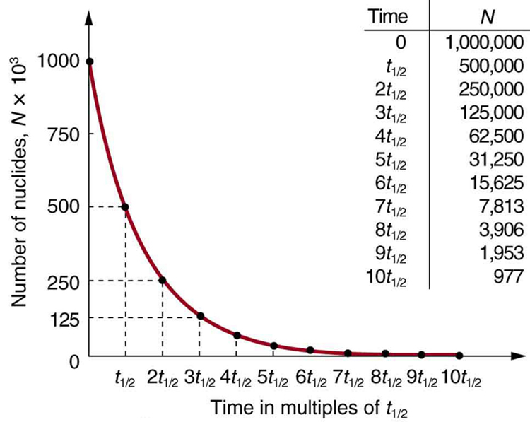
There is a tremendous range in the half-lives of various nuclides, from as short as \(10^{-23}\)s for the most unstable, to more than \(10^{16}\)y for the least unstable, or about 46 orders of magnitude. Nuclides with the shortest half-lives are those for which the nuclear forces are least attractive, an indication of the extent to which the nuclear force can depend on the particular combination of neutrons and protons. The concept of half-life is applicable to other subatomic particles, as will be discussed inParticle Physics. It is also applicable to the decay of excited states in atoms and nuclei. The following equation gives the quantitative relationship between the original number of nuclei present at time zero (N_0\) and the number (\(N\)) at a later time \(t\).
\[N = N_0e^{-\lambda t},\] where \(e = 2.71828 . . .\) is the base of the natural logarithm, and \(\lambda\) is thedecay constantfor the nuclide. The shorter the half-life, the larger is the value of \(\lambda\) and the faster the exponential \(e^{\lambda t}\) decreases with time. The relationship between the decay constant \(\lambda\) and the half-life \(t_{1/2}\) is
To see how the number of nuclei declines to half its original value in one half-life, let \(t = t_{1/2}\) in the exponential in the equation \(N = N_0e^{-\lambda t}\). This gives
\[N = N_0e^{-\lambda t} = N_0e^{-0.693} = 0.500 N_0.\] For integral numbers of half-lives, you can just divide the original number by 2 over and over again, rather than using the exponential relationship. For example, if ten half-lives have passed, we divide \(N\) by 2 ten times. This reduces it to \(N/1024\). For an arbitrary time, not just a multiple of the half-life, the exponential relationship must be used.
Radioactive datingis a clever use of naturally occurring radioactivity. Its most famous application iscarbon-14 dating. Carbon-14 has a half-life of 5730 years and is produced in a nuclear reaction induced when solar neutrinos strike \(^{14}N\) in the atmosphere. Radioactive carbon has the same chemistry as stable carbon, and so it mixes into the ecosphere, where it is consumed and becomes part of every living organism. Carbon-14 has an abundance of 1.3 parts per trillion of normal carbon. Thus, if you know the number of carbon nuclei in an object (perhaps determined by mass and Avogadro’s number), you multiply that number by \(1.3 \times 10^{-12}\) to find the number of \(^{14}C\) nuclei in the object. When an organism dies, carbon exchange with the environment ceases, and \(^{14}C\) is not replenished as it decays. By comparing the abundance of \(^{14}C\) in an artifact, such as mummy wrappings, with the normal abundance in living tissue, it is possible to determine the artifact’s age (or time since death). Carbon-14 dating can be used for biological tissues as old as 50 or 60 thousand years, but is most accurate for younger samples, since the abundance of \(^{14}C\) nuclei in them is greater. Very old biological materials contain no \(^{14}C\) at all. There are instances in which the date of an artifact can be determined by other means, such as historical knowledge or tree-ring counting. These cross-references have confirmed the validity of carbon-14 dating and permitted us to calibrate the technique as well. Carbon-14 dating revolutionized parts of archaeology and is of such importance that it earned the 1960 Nobel Prize in chemistry for its developer, the American chemist Willard Libby (1908–1980).
One of the most famous cases of carbon-14 dating involves the Shroud of Turin, a long piece of fabric purported to be the burial shroud of Jesus (Figure . This relic was first displayed in Turin in 1354 and was denounced as a fraud at that time by a French bishop. Its remarkable negative imprint of an apparently crucified body resembles the then-accepted image of Jesus, and so the shroud was never disregarded completely and remained controversial over the centuries. Carbon-14 dating was not performed on the shroud until 1988, when the process had been refined to the point where only a small amount of material needed to be destroyed. Samples were tested at three independent laboratories, each being given four pieces of cloth, with only one unidentified piece from the shroud, to avoid prejudice. All three laboratories found samples of the shroud contain 92% of the \(^{14}C\) found in living tissues, allowing the shroud to be dated (Example .
Calculate the age of the Shroud of Turin given that the amount of \(^{14}C\) found in it is 92% of that in living tissue.
Knowing that 92% of the \(^{14}C\) remains means that \(N/N_0 = 0.92\). Therefore, the equation \(N = N_0e^{-\lambda t}\) can be used to find \(\lambda t\). We also know that the half-life of \(^{14}C\) is 5730 y, and so once \(\lambda t\) is known, we can use the equation \(\lambda = \frac{0.693}{t_{1/2}}\) to find \(\lambda\) and then find \(t\) as requested. Here, we postulate that the decrease in \(^{14}C\) is solely due to nuclear decay.
Solving the equation \(N = N_0e^{-\lambda t}\) for N/N_0\) gives
Taking the natural logarithm of both sides of the equation yields
Rearranging to isolate \(t\) gives
Now, the equation \(\lambda = \frac{0.693}{t_{1/2}}\) can be used to find \(|lambda\) for \(^{14}C\). Solving for \(\lambda\) and substituting the known half-life gives
We enter this value into the previous equation to find \(t\).
This dates the material in the shroud to 1988–690 = a.d. 1300. Our calculation is only accurate to two digits, so that the year is rounded to 1300. The values obtained at the three independent laboratories gave a weighted average date of a.d. \(1320 \pm 60\). The uncertainty is typical of carbon-14 dating and is due to the small amount of \(^{14}C\) in living tissues, the amount of material available, and experimental uncertainties (reduced by having three independent measurements). It is meaningful that the date of the shroud is consistent with the first record of its existence and inconsistent with the period in which Jesus lived.
There are other forms of radioactive dating. Rocks, for example, can sometimes be dated based on the decay of \(^{238}U\). The decay series for \(^{238}U\) ends with \(^{206}Pb\), so that the ratio of these nuclides in a rock is an indication of how long it has been since the rock solidified. The original composition of the rock, such as the absence of lead, must be known with some confidence. However, as with carbon-14 dating, the technique can be verified by a consistent body of knowledge. Since \(^{238}U\) has a half-life of \(4.5 \times 10^9\)y, it is useful for dating only very old materials, showing, for example, that the oldest rocks on Earth solidified about \(3.5 \times 10^9\) years ago.
What do we mean when we say a source is highly radioactive? Generally, this means the number of decays per unit time is very high. We defineactivity\(R\) to be therate of decayexpressed in decays per unit time. In equation form, this is
\[R = \dfrac{\Delta N}{\Delta t}\] where \(\Delta N\) is the number of decays that occur in time \(\Delta t\). The SI unit for activity is one decay per second and is given the namebecquerel(Bq) in honor of the discoverer of radioactivity. That is,
Activity \(R\) is often expressed in other units, such as decays per minute or decays per year. One of the most common units for activity is thecurie(Ci), defined to be the activity of 1 g of \(^{226}Ra\), in honor of Marie Curie’s work with radium. The definition of curie is
\[1 \, Ci = 3.70 \times 10^{10} \, Bq,\] or \(3.70 \times 10^{10}\) decays per second. A curie is a large unit of activity, while a becquerel is a relatively small unit. \(1 \, MBq = 100 \, microcuries ~(\muCi)\). In countries like Australia and New Zealand that adhere more to SI units, most radioactive sources, such as those used in medical diagnostics or in physics laboratories, are labeled in Bq or megabecquerel (MBq).
Intuitively, you would expect the activity of a source to depend on two things: the amount of the radioactive substance present, and its half-life. The greater the number of radioactive nuclei present in the sample, the more will decay per unit of time. The shorter the half-life, the more decays per unit time, for a given number of nuclei. So activity \(R\) should be proportional to the number of radioactive nuclei, \(N\), and inversely proportional to their half-life, \(t_{1/2}\). In fact, your intuition is correct. It can be shown that the activity of a source is
where \(N\) is the number of radioactive nuclei present, having half-life \(t_{1/2}\). This relationship is useful in a variety of calculations, as the next two examples illustrate.
Calculate the activity due to \(^{14}C\) in 1.00 kg of carbon found in a living organism. Express the activity in units of Bq and Ci.
To find the activity \(R\) using the equation \(R = \frac{0.693 N}{t_{1/2}}\), we must know \(N\) and \(t_{1/2}\). The half-life of \(^{14}C\) can be found inAppendix B, and was stated above as 5730 y. To find \(N\), we first find the number of \(^{12}C\) nuclei in 1.00 kg of carbon using the concept of a mole. As indicated, we then multiply by \(1.3 \times 10^{-12}\) (the abundance of \(^{14}C\) in a carbon sample from a living organism) to get the number of \(^{14}C\) nuclei in a living organism.
One mole of carbon has a mass of 12.0 g, since it is nearly pure \(^{12}C\). (A mole has a mass in grams equal in magnitude to \(A\) found in the periodic table.) Thus the number of carbon nuclei in a kilogram is
So the number of \(^{14}C\) nuclei in 1 kg of carbon is
Now the activity \(R\) is found using the equation \(R = \frac{0.693 N}{t_{1/2}}\). Entering known values gives
or \(7.89 \times 10^9\) decays per year. To convert this to the unit Bq, we simply convert years to seconds. Thus,
or 250 decays per second. To express \(R\) in curies, we use the definition of a curie,
Our own bodies contain kilograms of carbon, and it is intriguing to think there are hundreds of \(^{14}C\) decays per second taking place in us. Carbon-14 and other naturally occurring radioactive substances in our bodies contribute to the background radiation we receive. The small number of decays per second found for a kilogram of carbon in this example gives you some idea of how difficult it is to detect \(^{14}C\) in a small sample of material. If there are 250 decays per second in a kilogram, then there are 0.25 decays per second in a gram of carbon in living tissue. To observe this, you must be able to distinguish decays from other forms of radiation, in order to reduce background noise. This becomes more difficult with an old tissue sample, since it contains less \(^{14}C\), and for samples more than 50 thousand years old, it is impossible.
Human-made (or artificial) radioactivity has been produced for decades and has many uses. Some of these include medical therapy for cancer, medical imaging and diagnostics, and food preservation by irradiation. Many applications as well as the biological effects of radiation are explored inMedical Applications of Nuclear Physics, but it is clear that radiation is hazardous. A number of tragic examples of this exist, one of the most disastrous being the meltdown and fire at the Chernobyl reactor complex in the Ukraine (Figure . Several radioactive isotopes were released in huge quantities, contaminating many thousands of square kilometers and directly affecting hundreds of thousands of people. The most significant releases were of \(^{131}I\), \(^{90}Sr\), \(^{137}Cs\), \(^{239}Pu\), \(^{238}U\), and \(^{235}U\). Estimates are that the total amount of radiation released was about 100 million curies.
It is estimated that the Chernobyl disaster released 6.0 MCi of \(^{137}Cs\) into the environment. Calculate the mass of \(^{137}Cs\) released.
We can calculate the mass released using Avogadro’s number and the concept of a mole if we can first find the number of nuclei \(N\) released. Since the activity \(R\) is given, and the half-life of \(^{137}Cs\) is found inAppendix Bto be 30.2 y, we can use the equation \(N = \frac{0.693N}{t_{1/2}}\) to find \(N\).
Solving the equation \(N = \frac{0.693N}{t_{1/2}}\) for \(N\) gives
Entering the given values yields
Converting curies to becquerels and years to seconds, we get
One mole of a nuclide \(^AX\) has a mass of \(A\) grams, so that one mole of \(^{137}Cs\) has a mass of 137 g. A mole has \(6.02 \times 10^{23}\) nuclei. Thus the mass of \(^{137}Cs\) released was
While 70 kg of material may not be a very large mass compared to the amount of fuel in a power plant, it is extremely radioactive, since it only has a 30-year half-life. Six megacuries (6.0 MCi) is an extraordinary amount of activity but is only a fraction of what is produced in nuclear reactors. Similar amounts of the other isotopes were also released at Chernobyl. Although the chances of such a disaster may have seemed small, the consequences were extremely severe, requiring greater caution than was used. More will be said about safe reactor design in the next chapter, but it should be noted that Western reactors have a fundamentally safer design.
Activity \(R\) decreases in time, going to half its original value in one half-life, then to one-fourth its original value in the next half-life, and so on. Since \(R = \frac{0.693N}{t_{1/2}}\), the activity decreases as the number of radioactive nuclei decreases. The equation for \(R\) as a function of time is found by combining the equations \(N = N_0e^{-\lambda t}\) and \(R = \frac{0.693N}{t_{1/2}}\), yielding
where \(R_0\) is the activity at \(t = 0\). This equation shows exponential decay of radioactive nuclei. For example, if a source originally has a 1.00-mCi activity, it declines to 0.500 mCi in one half-life, to 0.250 mCi in two half-lives, to 0.125 mCi in three half-lives, and so on. For times other than whole half-lives, the equation \(R = R_0 e^{-\lambda t}\) must be used to find \(R\).
PHET EXPLORATIONS: ALPHA DECAY
Watch alpha particles escape from a polonium nucleus, causing radioactive alpha decay. See how random decay times relate to the half life.
📖 OpenStax College Physics, Section 31.5. openstax.org · CC BY 4.0
- Define and discuss binding energy.
- Calculate the binding energy per nucleon of a particle.
The more tightly bound a system is, the stronger the forces that hold it together and the greater the energy required to pull it apart. We can therefore learn about nuclear forces by examining how tightly bound the nuclei are. We define thebinding energy(BE) of a nucleus to bethe energy required to completely disassemble it into separate protons and neutrons. We can determine the BE of a nucleus from its rest mass. The two are connected through Einstein’s famous relationship \(E = (\Delta m)c^2\).
A bound system has asmallermass than its separate constituents; the more tightly the nucleons are bound together, the smaller the mass of the nucleus.
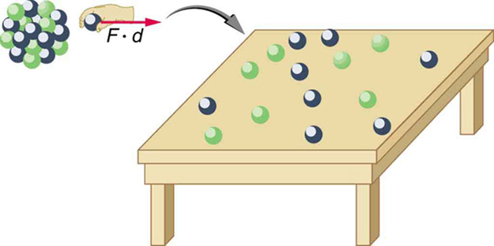
Imagine pulling a nuclide apart as illustrated in Figure . Work done to overcome the nuclear forces holding the nucleus together puts energy into the system. By definition, the energy input equals the binding energy BE. The pieces are at rest when separated, and so the energy put into them increases their total rest mass compared with what it was when they were glued together as a nucleus. That mass increase is thus \(\Delta m = BE/c^2\) This difference in mass is known asmass defect. It implies that the mass of the nucleus is less than the sum of the masses of its constituent protons and neutrons. A nuclide \(^AX\) has \(Z\) protons and \(N\) neutrons, so that the difference in mass is
\[ \Delta m = (Zm_p + Nm_n) - M_{tot}.\] Thus,
where \(m_{tot}\) is the mass of the nuclide \(^AX\), \(m_p\) is the mass of a proton, and \(m_n\) is the mass of a neutron. Traditionally, we deal with the masses of neutral atoms. To get atomic masses into the last equation, we first add \(Z\) electrons to \(m_{tot}\) which gives \(m(^AX)\), the atomic mass of the nuclide. We then add \(Z\) electrons to the \(Z\) protons, which gives \(Zm(^1H)\), or \(Z\) times the mass of a hydrogen atom. Thus the binding energy of a nuclide \(^AX\) is
The atomic masses can be found inAppendix A, most conveniently expressed in unified atomic mass units u \((1 \, u = 931.5 \, MeV/c^2)\). BE is thus calculated from known atomic masses.
Nuclear Decay Helps Explain Earth’s Hot Interior
A puzzle created by radioactive dating of rocks is resolved by radioactive heating of Earth’s interior. This intriguing story is another example of how small-scale physics can explain large-scale phenomena.
Radioactive dating plays a role in determining the approximate age of the Earth. The oldest rocks on Earth solidified about \(3.5 \times 10^9\) years ago—a number determined by uranium-238 dating. These rocks could only have solidified once the surface of the Earth had cooled sufficiently. The temperature of the Earth at formation can be estimated based on gravitational potential energy of the assemblage of pieces being converted to thermal energy. Using heat transfer concepts discussed inThermodynamicsit is then possible to calculate how long it would take for the surface to cool to rock-formation temperatures. The result is about \(10^9\) years. The first rocks formed have been solid for \(3.5 \times 10^9\) years, so that the age of the Earth is approximately \(4.5 \times 10^9\) years. There is a large body of other types of evidence (both Earth-bound and solar system characteristics are used) that supports this age. The puzzle is that, given its age and initial temperature, the center of the Earth should be much cooler than it is today (Figure .
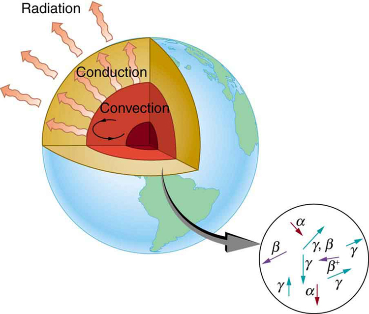
We know from seismic waves produced by earthquakes that parts of the interior of the Earth are liquid. Shear or transverse waves cannot travel through a liquid and are not transmitted through the Earth’s core. Yet compression or longitudinal waves can pass through a liquid and do go through the core. From this information, the temperature of the interior can be estimated. As noticed, the interior should have cooled more from its initial temperature in the \(4.5 \times 10^9\) years since its formation. In fact, it should have taken no more than about \(10^9\) years to cool to its present temperature. What is keeping it hot? The answer seems to be radioactive decay of primordial elements that were part of the material that formed the Earth (see the blowup in Figure .
Nuclides such as \(^{238}U\) and \(^{40}K\) have half-lives similar to or longer than the age of the Earth, and their decay still contributes energy to the interior. Some of the primordial radioactive nuclides have unstable decay products that also release energy— \(\ce{^{238}U}\) has a long decay chain of these. Further, there were more of these primordial radioactive nuclides early in the life of the Earth, and thus the activity and energy contributed were greater then (perhaps by an order of magnitude). The amount of power created by these decays per cubic meter is very small. However, since a huge volume of material lies deep below the surface, this relatively small amount of energy cannot escape quickly. The power produced near the surface has much less distance to go to escape and has a negligible effect on surface temperatures.
A final effect of this trapped radiation merits mention. Alpha decay produces helium nuclei, which form helium atoms when they are stopped and capture electrons. Most of the helium on Earth is obtained from wells and is produced in this manner. Any helium in the atmosphere will escape in geologically short times because of its high thermal velocity.
What patterns and insights are gained from an examination of the binding energy of various nuclides? First, we find that BE is approximately proportional to the number of nucleons \(A\) in any nucleus. About twice as much energy is needed to pull apart a nucleus like \(^{24}Mg\) compared with pulling apart \(^{12}C\), for example. To help us look at other effects, we divide BE by \(A\) and consider thebindingenergy per nucleon, \(BE/A\). The graph of \(BE/A\) in Figure reveals some very interesting aspects of nuclei. We see that the binding energy per nucleon averages about 8 MeV, but is lower for both the lightest and heaviest nuclei. This overall trend, in which nuclei with \(A\) equal to about 60 have the greatest \(BE/A\) and are thus the most tightly bound, is due to the combined characteristics of the attractive nuclear forces and the repulsive Coulomb force.
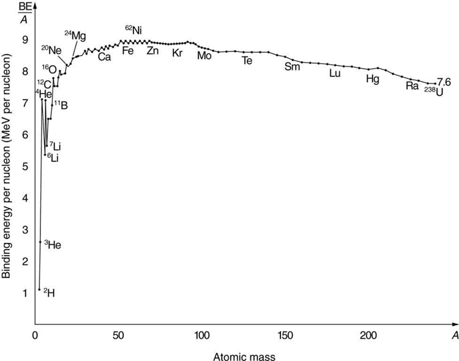
It is especially important to note two things—the strong nuclear force is about 100 times stronger than the Coulomb force,andthe nuclear forces are shorter in range compared to the Coulomb force. So, for low-mass nuclei, the nuclear attraction dominates and each added nucleon forms bonds with all others, causing progressively heavier nuclei to have progressively greater values of \(BE/A\). This continues up to \(A \approx 60\), roughly corresponding to the mass number of iron. Beyond that, new nucleons added to a nucleus will be too far from some others to feel their nuclear attraction. Added protons, however, feel the repulsion of all other protons, since the Coulomb force is longer in range. Coulomb repulsion grows for progressively heavier nuclei, but nuclear attraction remains about the same, and so \(BE/A\) becomes smaller. This is why stable nuclei heavier than \(A \approx 40\) have more neutrons than protons. Coulomb repulsion is reduced by having more neutrons to keep the protons farther apart (Figure .
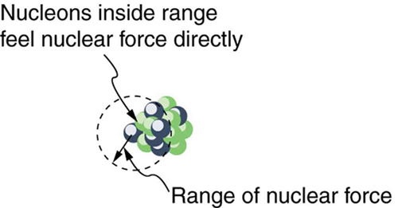
There are some noticeable spikes on the \(BE/A\) graph, which represent particularly tightly bound nuclei. These spikes reveal further details of nuclear forces, such as confirming that closed-shell nuclei (those with magic numbers of protons or neutrons or both) are more tightly bound. The spikes also indicate that some nuclei with even numbers for \(Z\) and \(N\) and with \(Z = N\), are exceptionally tightly bound. This finding can be correlated with some of the cosmic abundances of the elements. The most common elements in the universe, as determined by observations of atomic spectra from outer space, are hydrogen, followed by \(^4He\) with much smaller amounts of \(^{12}C\) and other elements. It should be noted that the heavier elements are created in supernova explosions, while the lighter ones are produced by nuclear fusion during the normal life cycles of stars, as will be discussed in subsequent chapters. The most common elements have the most tightly bound nuclei. It is also no accident that one of the most tightly bound light nuclei is \(^4He\) emitted in \(\alpha\) decay.
Calculate the binding energy per nucleon of \(^4He\) the \(\alpha\) particle.
To find \(BE/A\) we first find BE using the Equation \(BE = [(Z_m(^1H) + Nm_n) - m(^AX)]c^2\) and then divide by \(A\). This is straightforward once we have looked up the appropriate atomic masses inAppendix A.
The binding energy for a nucleus is given by the equation
For \(^4He\), we have \(Z = N = 2; thus,
Appendix Agives these masses as \(m(^4He) = 4.002602 \, u\). \(m(^1H) = 1.007825 \, u\), and \(m_n = 1.008665 \, u\). Thus
Noting that \(1 \, u = 931.5 \, MeV/c^2\), we find
Since \(A = 4\), we see that \(BE/A\) is this number divided by 4, or
This is a large binding energy per nucleon compared with those for other low-mass nuclei, which have \(BE/A \approx 3 \, MeV/nucleon\). This indicates that \(^4He\) is tightly bound compared with its neighbors on the chart of the nuclides. You can see the spike representing this value of \(BE/A\) for \(^4He\) on the graph inFigure. This is why \(^4He\) is stable. Since \(^4He\) is tightly bound, it has less mass than other \(A = 4\) nuclei and, therefore, cannot spontaneously decay into them. The large binding energy also helps to explain why some nuclei undergo decay. Smaller mass in the decay products can mean energy release, and such decays can be spontaneous. Further, it can happen that two protons and two neutrons in a nucleus can randomly find themselves together, experience the exceptionally large nuclear force that binds this combination, and act as a \(^4He\) unit within the nucleus, at least for a while. In some cases, the \(^4He\) escapes, and \(\alpha\) decay has then taken place.
There is more to be learned from nuclear binding energies. The general trend in \(BE/A\) is fundamental to energy production in stars, and to fusion and fission energy sources on Earth, for example. This is one of the applications of nuclear physics covered inMedical Applications of Nuclear Physics. The abundance of elements on Earth, in stars, and in the universe as a whole is related to the binding energy of nuclei and has implications for the continued expansion of the universe.
Problem-Solving Strategies: For Reaction, Binding Energies, & Activity Calculations
PHET EXPLORATIONS: NUCLEAR FISSION
Download thePhET simulationand start a chain reaction, or introduce non-radioactive isotopes to prevent one. Control energy production in a nuclear reactor!
The binding energy (BE) of a nucleus is the energy needed to separate it into individual protons and neutrons. In terms of atomic masses, \[BE = [(Zm(^1H) + Nm_n] - m(^AX)]c^2, \nonumber\] where \(m(^1H)\) is the mass of a hydrogen atom, \(m(^AX)\) is the atomic mass of the nuclide, and \(m_n\) is the mass of a neutron. Patterns in the binding energy per nucleon, \(BE/A\), reveal details of the nuclear force. The larger the \(BE/A\), the more stable the nucleus.
📖 OpenStax College Physics, Section 31.6. openstax.org · CC BY 4.0
- Define and discuss tunneling.
- Define potential barrier.
- Explain quantum tunneling.
Protons and neutrons areboundinside nuclei, that means energy must be supplied to break them away. The situation is analogous to a marble in a bowl that can roll around but lacks the energy to get over the rim. It is bound inside the bowl (Figure . If the marble could get over the rim, it would gain kinetic energy by rolling down outside. However classically, if the marble does not have enough kinetic energy to get over the rim, it remains forever trapped in its well.
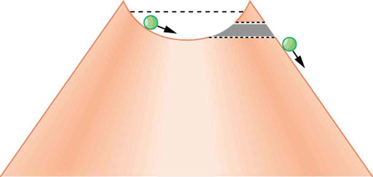
In a nucleus, the attractive nuclear potential is analogous to the bowl at the top of a volcano (where the “volcano” refers only to the shape). Protons and neutrons have kinetic energy, but it is about 8 MeV less than that needed to get out (Figure . That is, they are bound by an average of 8 MeV per nucleon. The slope of the hill outside the bowl is analogous to the repulsive Coulomb potential for a nucleus, such as for an \(\alpha\) particle outside a positive nucleus. In \(\alpha\) decay, two protons and two neutrons spontaneously break away as a \(^4He\) unit. Yet the protons and neutrons do not have enough kinetic energy to get over the rim. So how does the \(\alpha\) particle get out?
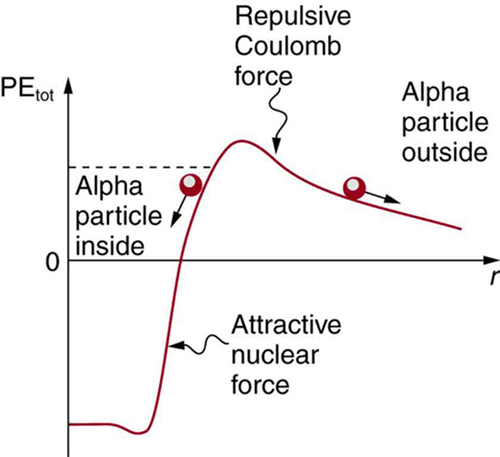
The answer was supplied in 1928 by the Russian physicist George Gamow (1904–1968). The \(\alpha\) particle tunnels through a region of space it is forbidden to be in, and it comes out of the side of the nucleus. Like an electron making a transition between orbits around an atom, it travels from one point to another without ever having been in between. Figure indicates how this works. The wave function of a quantum mechanical particle varies smoothly, going from within an atomic nucleus (on one side of a potential energy barrier) to outside the nucleus (on the other side of the potential energy barrier). Inside the barrier, the wave function does not become zero but decreases exponentially, and we do not observe the particle inside the barrier. The probability of finding a particle is related to the square of its wave function, and so there is a small probability of finding the particle outside the barrier, which implies that the particle can tunnel through the barrier. This process is calledbarrier penetrationorquantum mechanical tunneling. This concept was developed in theory by J. Robert Oppenheimer (who led the development of the first nuclear bombs during World War II) and was used by Gamow and others to describe \(\alpha\) decay.
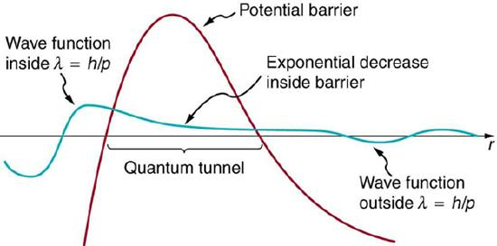
Good ideas explain more than one thing. In addition to qualitatively explaining how the four nucleons in an \(\alpha\) particle can get out of the nucleus, the detailed theory also explains quantitatively the half-life of various nuclei that undergo \(\alpha\) decay. This description is what Gamow and others devised, and it works for \(\alpha\) decay half-lives that vary by 17 orders of magnitude. Experiments have shown that the more energetic the \(\alpha\) decay of a particular nuclide is, the shorter is its half-life.Tunnelingexplains this in the following manner: For the decay to be more energetic, the nucleons must have more energy in the nucleus and should be able to ascend a little closer to the rim. The barrier is therefore not as thick for more energetic decay, and the exponential decrease of the wave function inside the barrier is not as great. Thus the probability of finding the particle outside the barrier is greater, and the half-life is shorter.
Tunneling as an effect also occurs in quantum mechanical systems other than nuclei. Electrons trapped in solids can tunnel from one object to another if the barrier between the objects is thin enough. The process is the same in principle as described for \(\alpha\) decay. It is far more likely for a thin barrier than a thick one. Scanning tunneling electron microscopes function on this principle. The current of electrons that travels between a probe and a sample tunnels through a barrier and is very sensitive to its thickness, allowing detection of individual atoms as shown in Figure \(\PageIndex{4a}\).
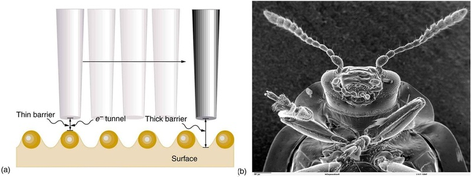
PHET EXPLORATIONS: QUANTUM TUNNELING AND WAVE PACKETS
Watch quantum "particles"tunnel through barriers. Explore the properties of the wave functions that describe these particles.
📖 OpenStax College Physics, Section 31.7. openstax.org · CC BY 4.0
| Section | Title |
|---|---|
| 31.1 | 31.1: Nuclear Radioactivity |
| 31.2 | 31.2: Radiation Detection and Detectors |
| 31.3 | 31.3: Substructure of the Nucleus |
| 31.4 | 31.4: Nuclear Decay and Conservation Laws |
| 31.5 | 31.5: Half-Life and Activity |
| 31.6 | 31.6: Binding Energy |
| 31.7 | 31.7: Tunneling |